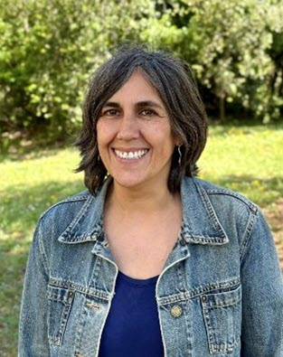
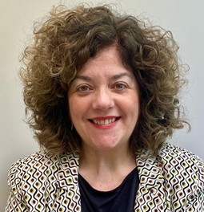
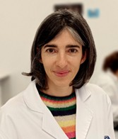

Aida Carreño (ICMAB-CSIC)
Title: Techniques for separation and quantification of biomolecules
Short bio: Aida Carreño, biotechnologist and doctor in Materials Science, is a nanomedicine researcher in the Nanomol-Bio group of the Institute of Materials Science of Barcelona (ICMAB-CSIC). Her research is focused on the development of nanovesicles towards the directed administration of enzymes, applied to the treatment of lysosomal diseases such as Fabry. She’s also involved in the development of accurate analytical techniques for the precise characterization of those nanovesicles, guaranteeing their quality and integrity.


Jordi Faraudo (ICMAB-CSIC)
Title: Alphafold in a nutshell
Short bio: Jordi Faraudo obtuvo su doctorado con una tesis sobre Física Estadística de No Equilibrio aplicada a coloides en la Universitat Autònoma de Barcelona. A partir de una estancia postdoctoral en el Imperial College London, empezó a interesarse por el área de la Materia Condensada Blanda en la que confluyen física, química, ciencia de materiales y biología, un interés con el que ha continuado hasta la actualidad.
Actualmente es Científico Titular en el Instituto de Ciencia de Materiales de Barcelona (ICMAB-CSIC). Su línea de trabajo explora cuestiones fundamentales en el campo de la materia condensada blanda como los mecanismos de auto ensamblaje de nanopartículas, macromoléculas y polímeros, la interacción entre moléculas biológicas y materiales inorgánicos para el diseño de nuevos materiales para aplicaciones biomédicas y en el desarrollo de nuevas teorías que permitan la descripción de mecanismos de transporte de objetos nanoscópicos bajo campos externos (electrocinética, magnetoforesis) yendo más allá de la teorías clásicas.
Su visión es emplear métodos teóricos y de simulación en áreas donde a pesar de existir una gran actividad experimental e incluso industrial no hay un marco conceptual apropiado e incluso no existen todavía unas herramientas de simulación con el poder predictivo deseable. Es autor de más de un centenar de artículos científicos en estas áreas, además de numerosas comunicaciones a congresos. Es miembro del consejo editorial de dos revistas científicas y evaluador de las principales revistas científicas en física, química y nanociencia. También tiene un gran interés por la divulgación, impartiendo conferencias tanto para el público en general como para docentes de primaria y secundaria y en museos de la ciencia.



Marc Martínez (ICMAB-CSIC)
Title: Working with cells, the basics of cell culture and its applications
Short bio: Marc Martínez Miguel received his degree in Biochemistry in 2016 in the Autonomous University of Barcelona (UAB). In 2017 he joined the ICMAB under the Department of Molecular Nanoscience and Organic Materials. In 2023 he received his PhD in Biochemistry, Molecular Biology and Biomedicine from the UAB. His work focused on the study of the interaction between cell cultures and 2D and 3D nanostructured systems. In late 2023 he joined the BIOSERVICE of the Scientific-Technical Services of the ICMAB as a technician. He currently works with many groups at ICMAB to test the properties of different materials using cell culture and bacteria in in vitro experiments, focusing mainly in therapies against cancer and antibacterial materials.

Juan Pellico (ICMAB-CSIC)
Title: Nanomaterials for Medical Imaging
Short bio: Juan Pellico Sáez obtained his BSc in chemistry from the University of Salamanca in 2010. After 2 years working as Research Assistant at the department of organic chemistry of the same university, he joined the advanced imaging unit at the Centro Nacional de Investigaciones Cardiovasculares (CNIC) in Madrid in 2012. There, he carried out his thesis under the supervision of Prof. Jesús Ruiz-Cabello and Dr. Fernando Herranz on the synthesis and radiolabelling of iron oxide nanoparticles for MRI and PET. He got the PhD degree in Chemistry from the Complutense University of Madrid (UCM) in 2016 and continued his research at CNIC with a Spanish grant. In 2018, he moved to the University of Oxford as postdoctoral research associate to work on the development of bio-responsive nanoparticles as contrast agents for MRI under the supervision of Prof. Jason J. Davis. Then, he joined to the group of Dr. Rafael T.M de Rosales at King’s College London in 2019 as senior reseracher in radiochemistry and nanotechnology. After 6 years in UK, Juan returned to Spain and recently joined the Institute of Materials Science of Barcelona with a Ramón y Cajal contract where he is leading a research line in medical imaging applications with nanomaterials.
During these years, Juan has published more than 40 works in peer-reviewed publications, 2 patents, supervised 2 PhD theses, 7 postgraduate and 5 undergraduate theses. Moreover, his achievements have been acknowledged with awards by prestigious societies such as the European Society of Molecular Imaging, the Royal Society of Chemistry, and the UK Preclinical Imaging community. His main area of interest combines novel particulate PET tracers with the application of nanotechnology in biomedicine to develop a new generation of imaging agents for multimodal molecular imaging and particle tracking applications.

David Piña (ICMAB-CSIC)
Title: Unraveling and Quantifying Molecular Biointeractions through ITC and SPR
Short bio: David is a member of the SOFT materials technical-scientific service at ICMAB, a team specializing in the preparation and characterization of soft molecular materials. He holds a degree in Nanoscience and Nanotechnology and a Master's in Chemical Engineering. Over the past decade, David has extensively worked on the development of supramolecular materials, with a specialized focus on designing nanovesicular systems for innovative biopharmaceutical applications.